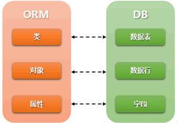

Django ORM模块精讲
Django 框架向我们提供了丰富的模块，避免程序员在开发的过程中重复“造轮子”，提高了开发者的工作效率。接下来的几节内容，将给大家介绍 Django 的主要功能模块，第一个模块是 Django 的 ORM 模块。
Web 开发中对数据库的操作是必不可少的，然而每种数据库的操作方式以及用法不尽相同。由于 Django 中 ORM 的存在，为我们操作不同种类的数据库提供了统一的方法，ORM 适配了多种常用的关系型数据库，例如 PostgreSQL、MySQL、Oracle、Sqlite3 等。
如图1是 ORM 与数据库的映射关系图。ORM 把类映射成数据库中的表，把类的一个实例对象映射成数据库中的数据行，把类的属性映射成表中的字段，通过对象的操作对应到数据库表的操作，实现了对象到 SQL、SQL 到对象转换过程。
Django 把表模型定义为 Model，他需要继承自
针对数据库中的字段类型，Django ORM 都有对应的 “xxxField” 来表述，见如下表格。
通过上述介绍，我们可以这样理解：Django 中模型类就相当于 ORM 模块。
利用 ORM 插入数据有两种方式，上面已经介绍了一种，下面介绍第二种方法，也就是创建 UserInfo 的实例对象，然后调用
ORM 的增删改查称为 CURD 操作，下面列举几个常用语句：
与此同时 ORM 也存在一点不足之处：
相比直接用 SQL 语句操作数据库会有性能损失，因为在映射的过程中 ORM 需要与 SQL 之间进行转换，根据对象的操作转换成 SQL 语句，根据查询结果转换成对象，所以在映射的过程存在性能损失。
但是 ORM 的不足带来的这点性能损失是微不足道的，ORM 的优势还是非常突出的。因为这种对象模型和关系型数据库之间的转换方式，给开发者带来了极大的便捷，所以其它语言开发的框架，对 ORM 也有很多应用，比如 Hibernate、IBATIS、EclipseLink 等。
1. 什么是 ORM？
ORM （Object Realtional Mapping）即对象关系映射，它是一种基于关系型数据库的程序技术。ORM 允许你使用类和对象对数据库进行操作，这大大提高了对数据库的控制，避免了直接使用 SQL 语句对数据库进行操作。这种程序技术的底层主要是通过映射机制实现的，有兴趣的可以自己研究一下！Web 开发中对数据库的操作是必不可少的，然而每种数据库的操作方式以及用法不尽相同。由于 Django 中 ORM 的存在，为我们操作不同种类的数据库提供了统一的方法，ORM 适配了多种常用的关系型数据库，例如 PostgreSQL、MySQL、Oracle、Sqlite3 等。

图1：ORM与DB映射关系图
图1：ORM与DB映射关系图
如图1是 ORM 与数据库的映射关系图。ORM 把类映射成数据库中的表，把类的一个实例对象映射成数据库中的数据行，把类的属性映射成表中的字段，通过对象的操作对应到数据库表的操作，实现了对象到 SQL、SQL 到对象转换过程。
Django 把表模型定义为 Model，他需要继承自
django.db.models中的 Model 类，只要是与数据表相关的操作，都需要继承这个类。同时ORM 对于数据库的的增删改查，也提供了一些简单的 API，例如 F 查询、Q 查询。针对数据库中的字段类型，Django ORM 都有对应的 “xxxField” 来表述，见如下表格。
| 字段 | 说明 | 字段属性 |
|---|---|---|
| AutoFiled | 默然自增主键（Primary_key=Ture），Django 默认建立id字段为主键。 | |
| CharFiled | 字符类型 | Max_length=32，字符长度需要明确 |
| IntgerFiled | 整型 int | |
| DateFiled | 年月日时间类型 | auto_now=True，数据被更新就会更新时间 ；auto_now_add=True，数据第一次参数时产生。 |
| DateTimeFiled | 年月日小时分钟秒时间类型 | auto_now=True，数据被更新就会更新时间； auto_now_add=True，数据第一次参数时产生。 |
| DecimalFiled | 混合精度的小数类型 | max_digits=3，限定数字的最大位数(包含小数位)；decimal_places=2，限制小数的最大位数。 |
| BooleanFiled | 布尔字段，对应数据库 tinyint 类型数据长度只有1位。 | 值为True或False |
| TextFiled | 用于大文本 |
上表中列举了经常用到的字段类型，后续如果涉及到其它字段类型再进行介绍。
2. Django中定义数据表
那么在 Django 中如何使用 ORM 模块来定义一张数据表呢？在定义数据表之前，我们应该首先理解什么是模型类。1) 模型类
其实模型类本质上属于一个 Python 类，只不过在 Django 中称之为做模型类 ，它是由 django.db.models.Model 派生出的子类，在 Django 中模型类是数据交互的接口，一个模型类代表数据库中的一张数据表，模型类中每一个类属性都代表数据表中的一个字段。通过上述介绍，我们可以这样理解：Django 中模型类就相当于 ORM 模块。
2) 定义数据表
现在有一张用户信息表 UserInfo，它有两个字段 name 和 password，可以定义如下：
from django.db import models
class UserInfo（models.Model）:
name = models.CharFiled(max_length=100)
password = models.CharFiled(max_length=100)
通过以上代码，UserInfo 数据表就已经创建完成，我们对代码进行逐行解析：
- 第 1 行，使用 from django.db import models 导入 models 模块；
- 第 2 行，使用 class 关键字对 UserInfo 表进行类定义，并继承了models 模块中的 Model 类；
- 第3、4 行，数据表中的字段 name 和 password 是 UserInfo 类的属性，name 和 password 字段类型都是 CharFiled，字段长度均是100。
3. ORM 管理器对象
那么应该怎样对数据表进行操作呢？我们可以直接使用类名（即数据表名）来插入数据，下面是插入数据的一种方法：UserInfo.objects.create(name='jay',password='abc123')上面代码插入一条名字是“jay”，密码是“abc123”的数据。读到这里，您可能会对“ objects ”产生疑问，所以在此处讲解一个重要的概念：每个继承自
models.Model 的模型类，都会有一个 objects 对象被同时继承下来，这个对象就叫做“管理器对象”，数据库的增删改查可以用 objects 管理器对象来实现。利用 ORM 插入数据有两种方式，上面已经介绍了一种，下面介绍第二种方法，也就是创建 UserInfo 的实例对象，然后调用
save()方法保存，代码如下：
Obj=UserInfo（name="jay",password="abc123"） Obj.name="john" Obj.save()上述代码中 name 属性值会被赋值为“john”，最后调用
save()方法保存。ORM 的增删改查称为 CURD 操作，下面列举几个常用语句：
UserInfo.objects.all()#查询表中的所有记录 UserInfo.objects.filter(name_contains='j')#查询表中name含有“j”的所有记录,被使用较多 UserInfo.objects.get(name="john")#有且只有一个查询结果，如果超出一个或者没有,则抛出异常 UserInfo.objects.get(name="john").delete()#删除名字为john的记录 UserInfo.objects.get(name="john").update(name='TOM')#更新数据表的name为TOM
4. ORM优势与不足
ORM 模块确实有诸多的优势，比如：- 使用该模块只需要面向对象编程，不需要面向数据库编写代码，对数据库的操作转换为对类属性和方法的操作，不用我们编写各种数据库的 SQL 语句。
- 实现数据模型与数据库的解耦，屏蔽了不同数据库操作上的差异化，不在关注不同数据库内部的操作细节，通过简单更改配置就可以实现数据库的更换而无需更改代码。
与此同时 ORM 也存在一点不足之处：
相比直接用 SQL 语句操作数据库会有性能损失，因为在映射的过程中 ORM 需要与 SQL 之间进行转换，根据对象的操作转换成 SQL 语句，根据查询结果转换成对象，所以在映射的过程存在性能损失。
但是 ORM 的不足带来的这点性能损失是微不足道的，ORM 的优势还是非常突出的。因为这种对象模型和关系型数据库之间的转换方式，给开发者带来了极大的便捷，所以其它语言开发的框架，对 ORM 也有很多应用，比如 Hibernate、IBATIS、EclipseLink 等。
关注公众号「站长严长生」，在手机上阅读所有教程，随时随地都能学习。内含一款搜索神器，免费下载全网书籍和视频。

微信扫码关注公众号